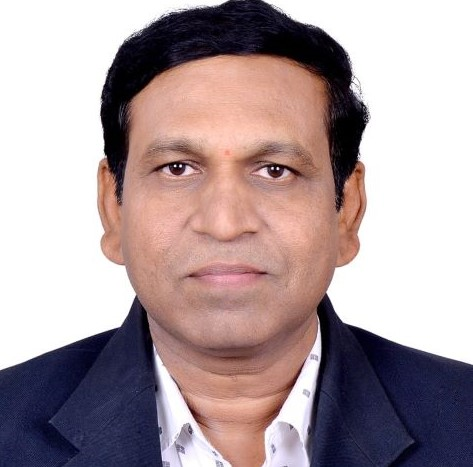

Prof. Raghunath Subhanrao Bhadade
Associate Professor and Program Coordinator (ECE)

Associate Professor and Program Coordinator (ECE)
Dr. Raghunath S. Bhadade is an accomplished Assistant Professor in the department of Electrical and Electronics Engineering at Dr. Vishwanath Kard MIT World Peace University, Pune. With a Ph.D degree from the Savitribai Phule Pune University, he is an approved Ph.D guide and holds two patents in his name. Dr. Bhadade has presented and published numerous research papers in National and International conferences and journals indexed in SCI/SCOPUS. He specializes in RF, Microwave and Antennas, Wireless Communications, Software Defined and Cognitive Radio, and Television Engineering. He also provides Testing and Calibration services, and serves as a faculty mentor for Vishwashanti CanSat Team. As a life member of the Indian Society for Technical Education, Dr. Bhadade has been invited as a resource person in FDP/STTPs in his research areas and as a guest speaker across India in the field of Electronics and Communication Engineering. He has organized various social events at his birthplace to aid the overall development of rural people. Dr. Bhadade also has a passion for trekking and has actively participated in various treks across India.
RF, Microwave and Antennas, Wireless Communications, Software Defined and Cognitive Radio, Television Engineering
Profiles